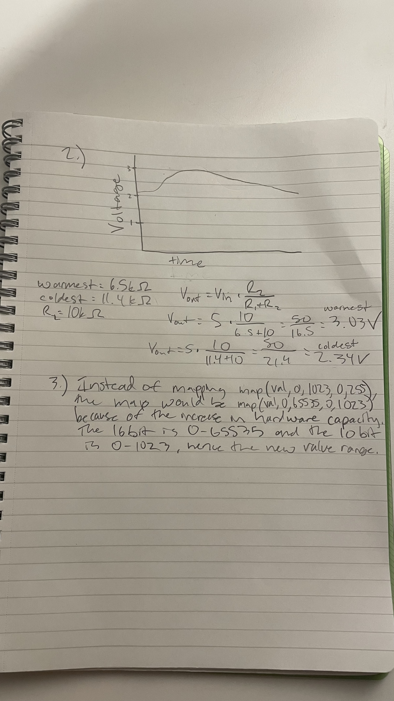
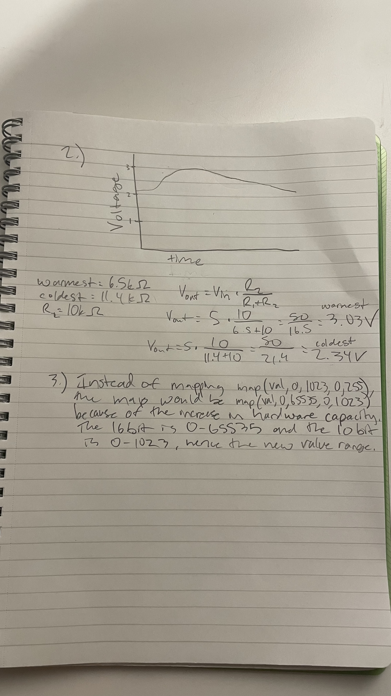

For assignment 3, I decided to create a model that detects heat and lights up 3 lightbulbs in accordance to the heat level. Below, I have include my schematic, calculations, firmware, my circuits operations, and finally my answers to the additional questions.
 

No AI was used on this assignment
// Analog input pin that the thermistor is attached to
const int analogInPin = A0;
// Define pin led 1 is attached to
const int led1Pin = 9;
// Define pin led 2 is attached to
const int led2Pin = 10;
// Define pin led 3 is attached to
const int led3Pin = 11;
// stores value from thermistor
int sensorValue = 0;
// Setup serial
void setup() {
// initialize serial communications at 9600 bps:
Serial.begin(9600);
}
// main loop
void loop() {
// read the analog in value:
int sensorValue = analogRead(analogInPin);
// constrain the sensor value so it stays between 500 and 575
int sensVal = constrain(sensorValue, 500, 575);
// initialize led 1 to 0 (off)
int led1Val = 0;
// initialize led 2 to 0 (off)
int led2Val = 0;
// initialize led 3 to 0 (off)
int led3Val = 0;
// Check if sensor value is less than or equal to 525
if (sensVal <= 525) {
// LED 1 fades in
led1Val = map(sensVal, 500, 525, 0, 255);
}
// Check if sensor value is less than or equal to 550
else if (sensVal <= 550) {
// LED 1 full, LED 2 fades in
led1Val = 255;
led2Val = map(sensVal, 500, 550, 0, 255);
}
// else
else {
// LED 1 & 2 full, LED 3 fades in
led1Val = 255;
led2Val = 255;
led3Val = map(sensVal, 550, 575, 0, 255);
}
// Write the brightness value to LED 1
analogWrite(led1Pin, led1Val);
// Write the brightness value to LED 2
analogWrite(led2Pin, led2Val);
// Write the brightness value to LED 3
analogWrite(led3Pin, led3Val);
// Print "sensor=" + sensorValue to serial
Serial.print("sensor=");
Serial.print(sensorValue);
// Print "L1=" + led1Val to serial
Serial.print(" L1=");
Serial.print(led1Val);
// Print "L2=" + led2Val to serial
Serial.print(" L2=");
Serial.print(led2Val);
// Print "L3=" + led3Val to serial
Serial.print(" L3=");
Serial.println(led3Val);
// wait 2 milliseconds before the next loop for the analog-to-digital
// converter to settle after the last reading:
delay(2);
}
https://youtube.com/shorts/j2zliqcI5wM?feature=share